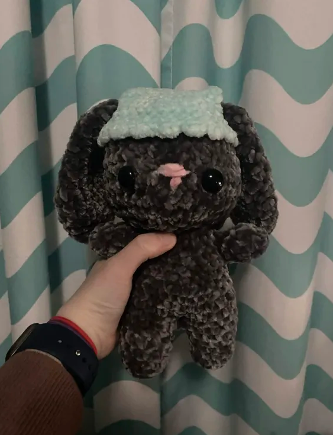

crocheting is another fun hobby that can make time go by fast. there’s endless possibilities and you can also do other things while you’re crocheting!
crocheting can be somewhat difficult to learn and there’s a lot of different styles so I will not be explaining how to crochet but two of my favorites are plushies and clothes! any animal plushie is going to be cute (the bunny in the photo took me around 2 days to complete), and clothes such as hats, scarves, or even tops are super fun and useable! crocheting is also fun because you can do other things while crocheting. I like to listen to audiobooks or watch movies while I make things!